Introduction
LemmaLoom is a qualitative data analysis application that is also grammar-aware. You can code passages just like you would in any other QDA-style application, but with LemmaLoom, you can interrogate those codings against the grammar used throughout the document. Say you coded passages for implying “Uncertainty”; you could then query the document for certain grammatical patterns that occur within those codings, like uses of hedging and modal verbs.
What is LemmaLoom
LemmaLoom can work with any kind of text. Whether you have essays, opinion pieces, news articles, surveys, interviews, or works of literature, LemmaLoom can consume them. There are only certain formats that are supported though. Plain text files, PDFs, web articles (via URL), audio, and video recordings are supported for import. Audio and video recordings are also transcribed into text using speech to text models; additionally, a diarization model will automatically code the unique speakers in the transcribed text for you.
The main window
There are three columns in the main window. A tour of the main window in Chapter 2, Getting Started takes an in-depth look at each element of the window.
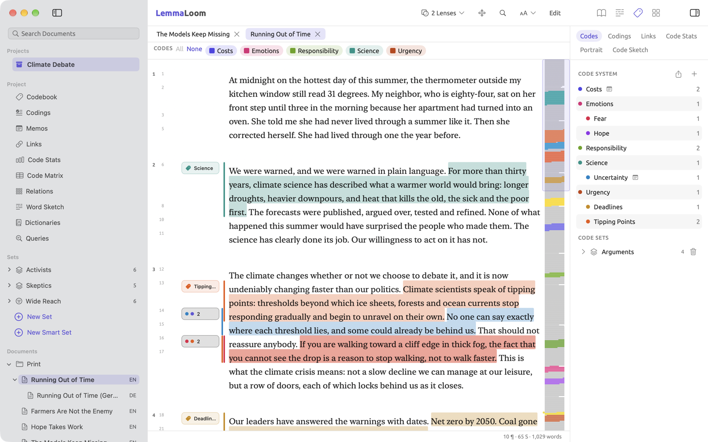
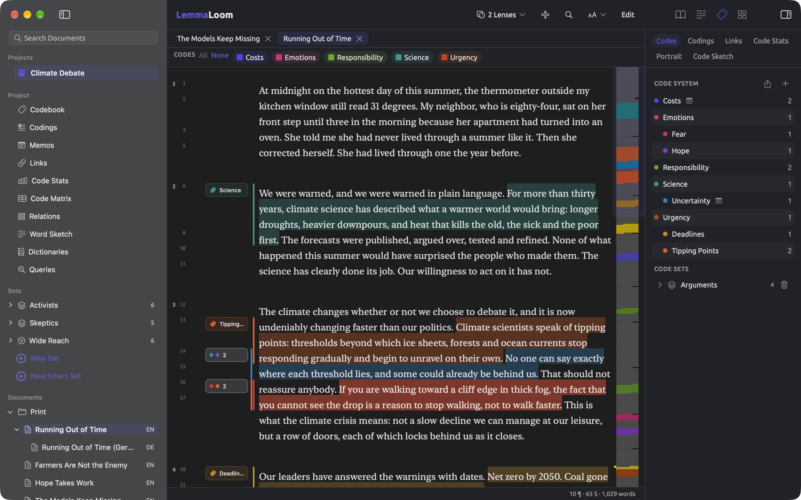
The navigation sidebar, which appears on the left side of LemmaLoom, displays all your projects. Within the navigation sidebar is the active project’s project shelf under Project, where all ten sections are found, Codebook, Code Matrix, and Queries being among them. Each section opens as a detail view in a tab of the reader. Below the shelf are the project’s sets, groups, documents, and tags of those documents.
The reader takes up the center of the main window. Each document and detail view gets its own dedicated tab. In the title band across the top of the reader you will find the lens menu and the buttons for searching text and changing its font and text size. At the right side of the title band is Edit, which switches the reader to editing mode. Upon selecting text within the reader, the selection bar pops up at the bottom of the reader. This is where you can click Bookmark, Code, Memo, and Link; if your project uses a dictionary, this is where you find Add to Dictionary.
On the right side of LemmaLoom is the inspector, containing everything concerning the document in the active tab. Its four tabs include Text, Grammar, Coding, and Multimode, which contains Sketch Space and a query builder for the document. Tabs may also be accessed via View ▸ Inspector (⌥⌘1 to ⌥⌘4). Each tab is divided into several parts, called facets, with the button row atop the tab changing what facet you’re viewing.
Kinds of work
Should there be any terms in this chapter you are unfamiliar with, jump to the Key terms section to learn them.
Qualitative coding
Coding consists of attaching labels called codes to any passages where text relating to your code appears. A code can be thematic, emotional, technical, a question, anything you want it to be. Usually, codes are designed to help you answer specific questions about your source material, so start with your questions and try to identify what aspects of the text might help you answer those questions in a qualitative or quantitative manner. In the bundled example project “Climate Debate”, there are codes called “Urgency”, “Science”, and “Emotions”; you can see how these codes are applied throughout the documents in the project, and how they help answer questions about how the documents present climate information differently. Usually, you set up your codes from the project’s Codebook (click Codebook under Project in the navigation sidebar) and apply them as you read through your texts, though codes can also be created as you go about reading, or in vivo. To code a passage, select the passage in the reader and click Code in the selection bar at the bottom. You can pick a code from your codebook, or create a new code as aforementioned.
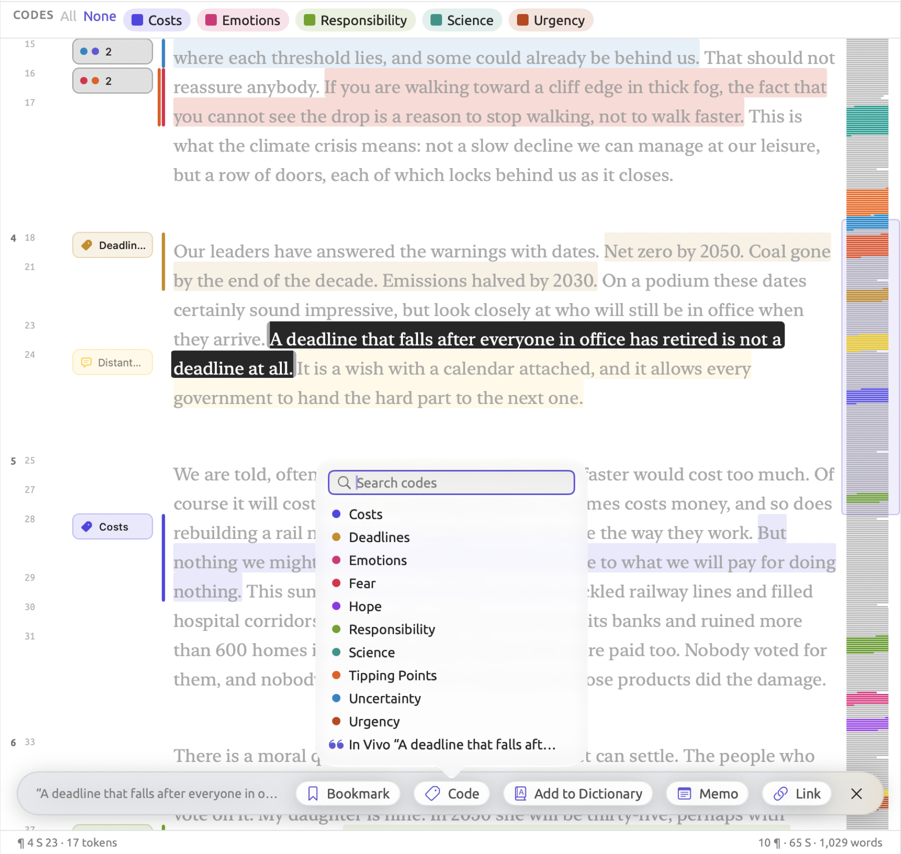
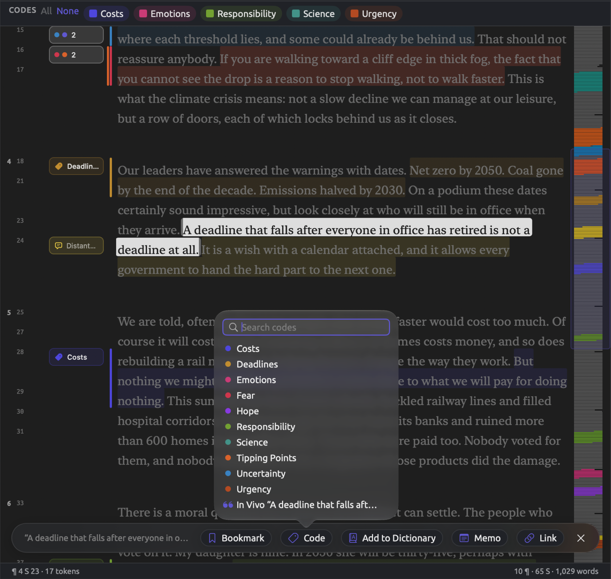
Memos, links, and bookmarks are similar to codes and are applied the same way, but each serves different purposes. Codes and coding later in this chapter describes each of them and when you would choose one over the other. LemmaLoom can also auto-code passages for you (Auto Code…) using some of the other tools described later in this guide; tools such as dictionaries, queries, and analyzers can all be used to help automate the process of coding certain patterns in your texts.
Projects and sets contain three coding table reports. Code Stats gives you a breakdown on how many times each code occurred; Code Matrix provides an interactive cross-reference of codes against either documents or particular values of an attribute; Relations gives an interactive view of codes found together within the same text passages. If you go into the inspector’s Coding tab for any document, you will find similar information but specifically for the active document, plus a Portrait, which displays where in the text each code falls.
Any software supporting the REFI-QDA standard for exchanging qualitative data analysis projects can exchange them with LemmaLoom. To import such a project into LemmaLoom, select File ▸ Import ▸ REFI-QDA Project; to export a project from LemmaLoom to another application, select File ▸ Export ▸ REFI-QDA Project. A codebook alone can be exchanged similarly via REFI-QDA Codebook in the same two menus. Moving an entire project to another Mac entails exporting the project through File ▸ Export ▸ LemmaLoom Project; everything will come along with it, including indexing and media files. To restore an exported project archive on another Mac, use File ▸ Import ▸ LemmaLoom Archive. Chapter 22, Exchanging and Exporting has the details of both kinds of exchange.
Linguistic analysis
LemmaLoom indexes documents that are in English, German, or Chinese when you import them. Indexing is when LemmaLoom identifies the dictionary form and part of speech of every word in your text, identifies how words function within a sentence, and how a word relates to other words in the same sentence. This information is “indexed” within a database to power the rest of LemmaLoom’s grammar tooling and features like Queries and Analyzers. By default, LemmaLoom provides some built-in analysis of indexed data that you can visualize via lenses or the grammar inspector (Chapter 6, Lenses, Chapter 11, The Grammar Inspector); some of these are findings of cohesion, metadiscourse, and rhetoric (Analysis tools later in this chapter explains these terms).
Within the reader, lenses style your text to help you identify and visualize where an aspect of a lens exists in your document. An example would be the Word class lens, which color codes every word in your document by the class it belongs to (part of speech). There are a number of built-in lenses you can apply to help you find certain grammatical patterns, forms, or functions in your text. You can also develop your own lenses using queries and analyzers (Chapter 18, Using Query Results, Chapter 20, Custom Analyzers). Another place that helps you extract grammatical information from your text is the inspector (the right-hand panel next to the reader). The various tabs in the inspector perform different kinds of analysis on your document to help you understand its contents and what that content is doing, grammatically.
A word sketch takes one word and sorts all the words it occurs with according to grammatical relation. Examples of this are verbs whose subjects are climate and adjectives modifying summer.
A query is a measurable question about your document. You can build a query to find specific words, phrases, patterns, how these things interact with your codings, or general statistics about your text. A query can cover a single document, a set of documents, or the entire project. Queries can even perform some analysis across projects, though this capability is more limited. The type of question you are asking will determine how the result of your question is formatted. For example, if your query was just to “find all phrases where a modal verb is used”, you would receive a list of all those phrases, but if your query was “count all phrases where a modal verb is used”, then you would just receive a numerical value as the output. The different types of outputs determine what you can do with the result in LemmaLoom (see Chapter 16, Query Results and Statistics and Chapter 18, Using Query Results).
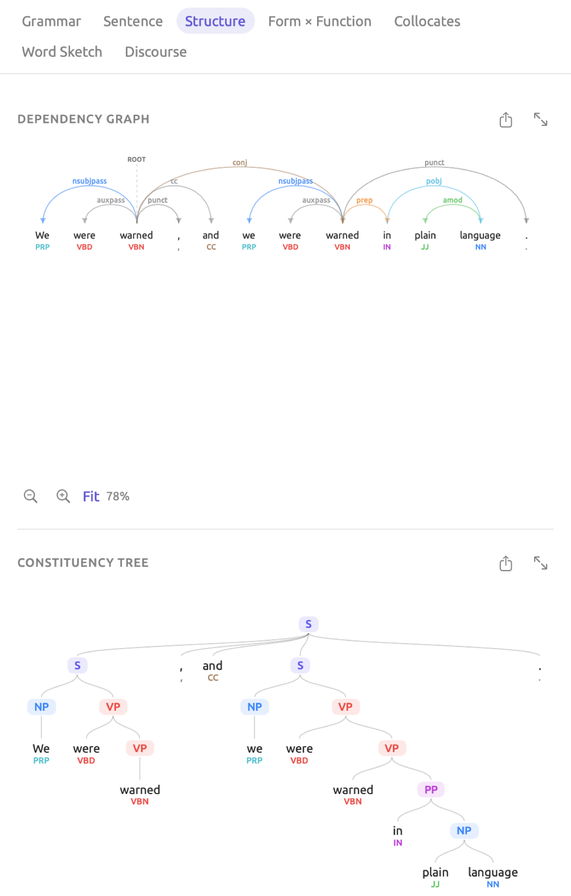
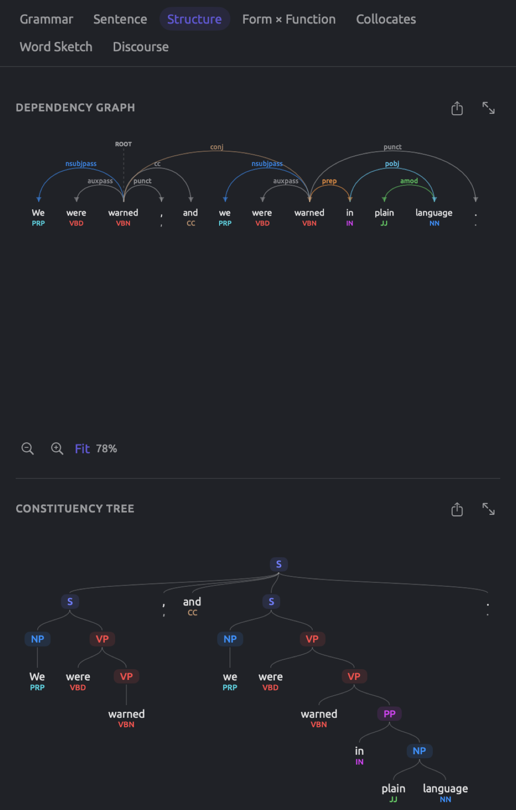
Mixed methods
Codes, attributes, and grammar analysis all live within a single project. One question or query can ask anything of those aspects in your project. Take the Code Matrix of “Climate Debate” with its columns grouped by the attribute “Stance” as an example; it shows how often each code was applied in the activists’ texts, the skeptics’ texts, and the neutral sources. Here you can combine the use of codings and attributes to visualize how different codes are applied in reference to another aspect, like the value of an attribute.
A query can count the terms of a dictionary matched in your corpus and compare how often those matches occur in relation to some other filter, like an attribute. An example from the “Climate Debate” project would be a query that takes the “Hedges” dictionary to see how often matches occur per 10,000 words for documents attributed as “Activist” or “Skeptic”. This type of query would produce a rate. In this example, the rate is the count of hedges found divided by the total number of words multiplied by 10,000. Six hedges in a 600-word column (round numbers, invented for illustration) would then produce , or 100 hedges per 10,000 words. There are a number of recipes in the project level query builder that act as starting places for different types of queries and results.
Sketch Space is a visual tool to help you understand the distribution of grammatical partners across other aspects of your documents, like codes or attributes. For example, you can compare which verbs take climate as their subject in activist attributed documents as well as skeptic attributed documents. This will help you visualize whether certain groups of documents differ in how often something happens in them. You can see how large that difference is by showing a query as Compare.
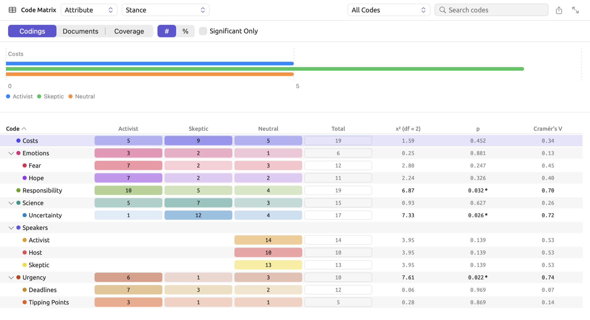
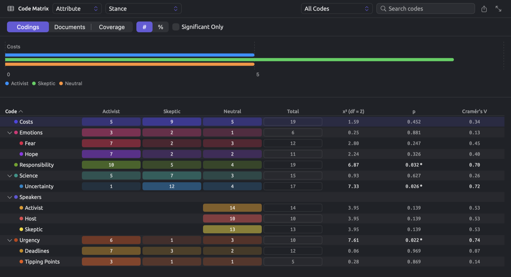
A query result that outputs passages from documents allows you to see where those passages came from. You can navigate directly to those passages. Chapter 16, Query Results and Statistics covers how to interpret query results in full.
Key terms
The Glossary at Help ▸ Glossary contains definitions of most of the terms below. It also contains definitions for grammatical labels used in LemmaLoom, including part-of-speech tags and dependency relations. Type your search into the Glossary’s Search field or choose from the list of categories to browse in the sidebar. You can keep it open beside your work.
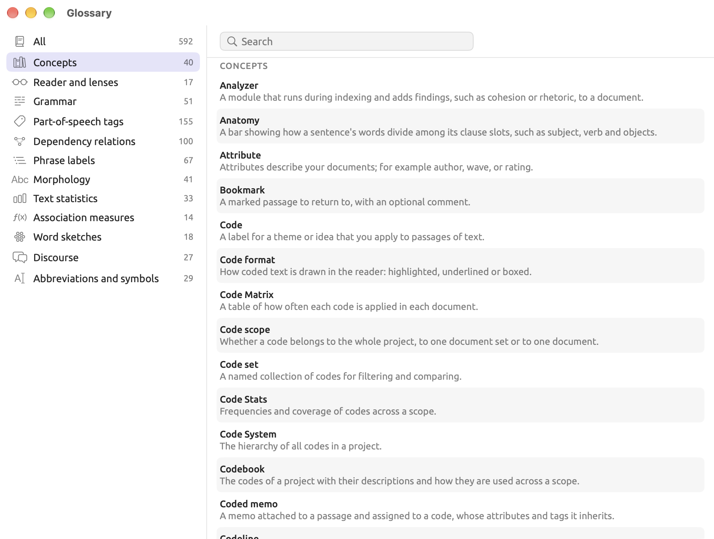
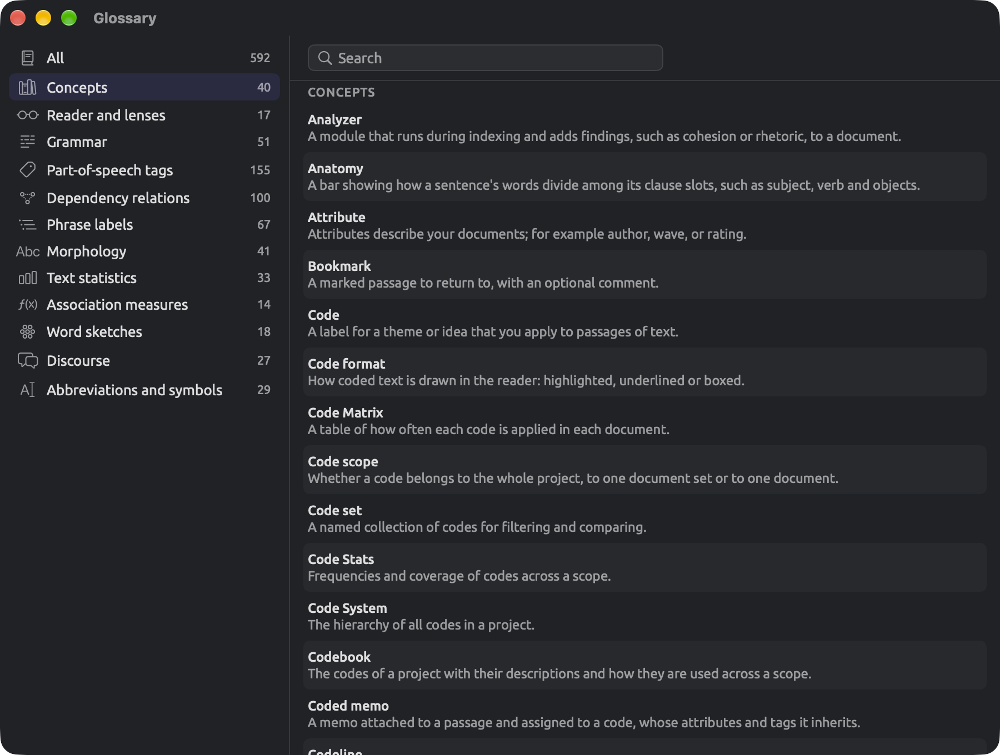
Projects, documents, and translations
Each project holds one study in LemmaLoom, that is, its documents and everything that goes with analyzing them. All the codings, codes, memos, sets, attributes, saved queries, and dictionaries that you create belong to that project. Projects are separate from one another, and only three things are shared across them. Custom analyzers and tags are shared globally. So are queries you save for all projects. More detail can be found in Working across projects in Chapter 3, Projects and Documents.
Documents refer to individual texts in the project. They may have been written in plain text files or PDFs. They could have been pulled straight from websites or from web articles. Recordings of audio and video also qualify as documents and are transcribed for you when you import them. Word files are imported by first saving them as plain text or PDF. Further detail is provided in Text files in Chapter 4, Importing Material. Every document contains metadata such as a name and language, authors, dates, publishers, and DOIs; they are edited in Document Properties. You access Document Properties via the shortcut menu for the document in the navigation sidebar; Control-click the document name and select Properties from its menu. Shortcut menus are described in Conventions later in this chapter.
When importing a recording as a document, every passage of its transcript has a time stamp and, when more than one voice is detected, an associated speaker. “Radio Debate” is an example of a transcribed audio recording, having three distinct speakers, namely “Host”, “Activist”, and “Skeptic”.
A translation is a version of a document in another language. To make a translation, choose Translate in the document’s shortcut menu. The navigation sidebar will list translations under the document they originated from. The translated document is named after the original with the language it was translated to appended in parentheses, for example “Running Out of Time (German)”. The original and translated document are aligned (as closely as possible) so that a coding or memo you add to one appears in the other in the correct spot. Links and bookmarks carry over the same way. Counts and searches across a set or a project use only the original document unless explicitly decided otherwise. To include translations, set a query’s Corpus to Translations or Both. For a word sketch, choose a translation language as its Corpus. Chapter 9, Translations and Split View goes over more details of how translations can be used.
Arranging documents
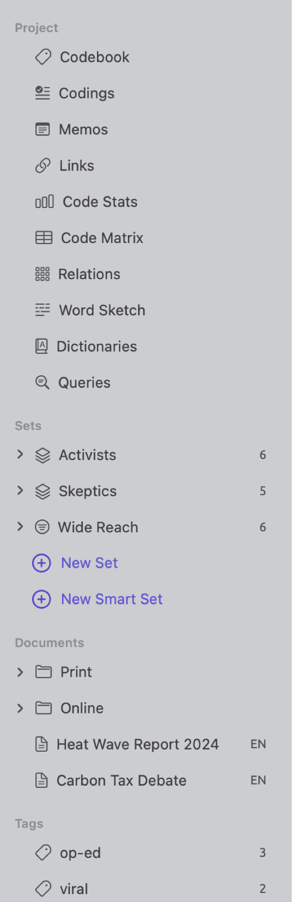
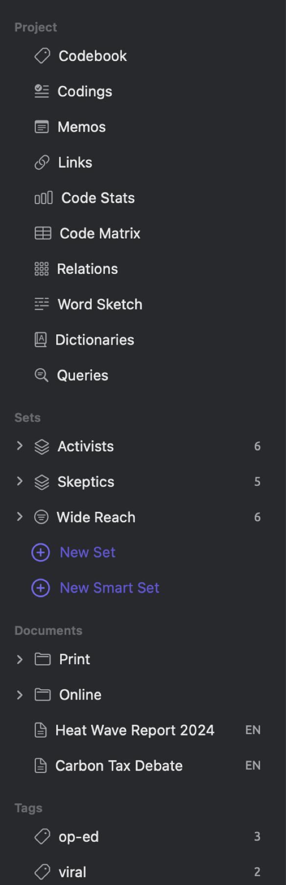
Groups act like folders for you to organize your documents. A document can exist only in a single group or in no group at all. Unlike document sets, groups are not a semantic unit; they are mainly a way to organize your list. To analyze the documents of a group, make a smart set with a Group condition, or use a document set instead. In the “Climate Debate” project, you can see how some documents exist in groups and others do not.
A set (or document set) refers to a named collection of documents within a project. Typically, you will use a set to tell LemmaLoom which documents should be included in an analysis. Multiple sets may overlap; one document may belong to multiple sets simultaneously. Clicking on a set within the navigation sidebar opens it; it contains the same ten sections as the project shelf, limited to its documents. “Climate Debate” has two sets of documents, “Activists” and “Skeptics”.
A smart set determines its membership automatically through conditions. LemmaLoom will dynamically keep track of whether the documents meet the set criteria. A condition allows testing an attribute, tags, or groups. Furthermore, you can test conditions on a document’s format, language, or metadata such as titles and dates. For example, the smart set “Wide Reach” contains one condition stating “Readership” is at least 100,000.
Tags represent free-form labels that can be applied to both projects and documents. Also, you can apply tags to codes, links, and memos. Tags can be used to filter lists or to choose documents. All your projects share a unified list of tags. From Window ▸ Tags, you get access to the tag list with each tag having a count of the items that carry it. Tag naming does not differentiate between capitalization; thus, tags “Viral” and “viral” are the same tag. Furthermore, each tag on the project’s documents acts as a set and appears in the Tags section of the navigation sidebar. Several documents within “Climate Debate” are tagged “op-ed” and “viral”.
An attribute represents one piece of factual data about each document. Examples of attributes could be the stance taken in the text and its date of publication. Every attribute needs to have a name and a type. The types available include Text, Integer, Decimal, Boolean (yes or no), Date, and Picker (one value from a fixed list). To input data into attributes, you can go to Attributes via a project’s shortcut menu. This opens the Attributes window, a table with documents as rows and attributes as columns. Click Add Attribute to introduce a new attribute and populate its values across all documents. Alternatively, you can enter one document’s values from within its Document Properties. “Climate Debate” has four attributes:
| Attribute | Type | Values |
|---|---|---|
| Stance | Picker | Activist, Skeptic, or Neutral |
| Readership | Integer | a whole number |
| Publication Date | Date | a date |
| Outlet | Text | any text |
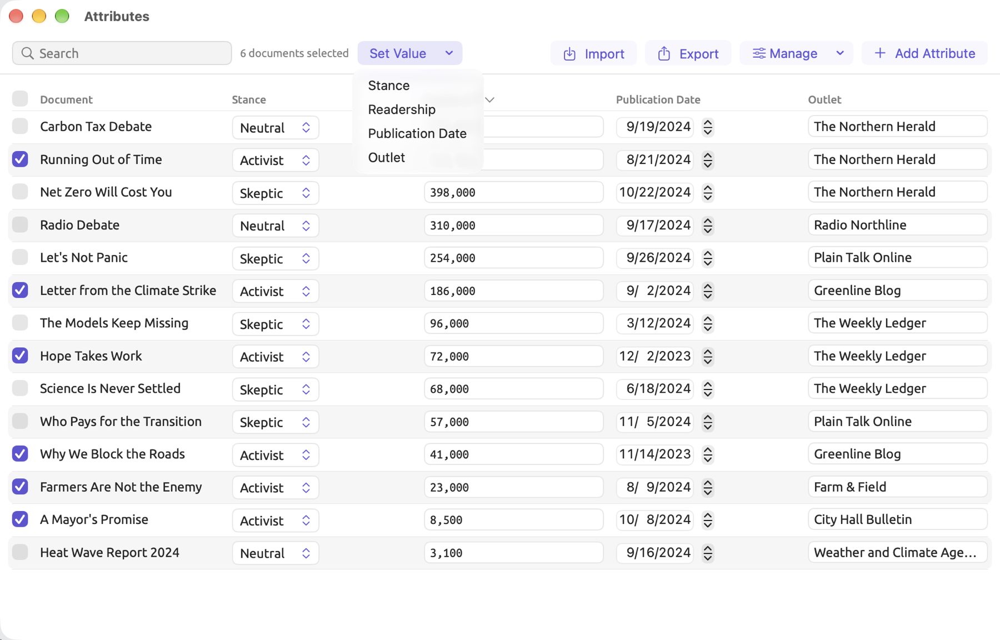
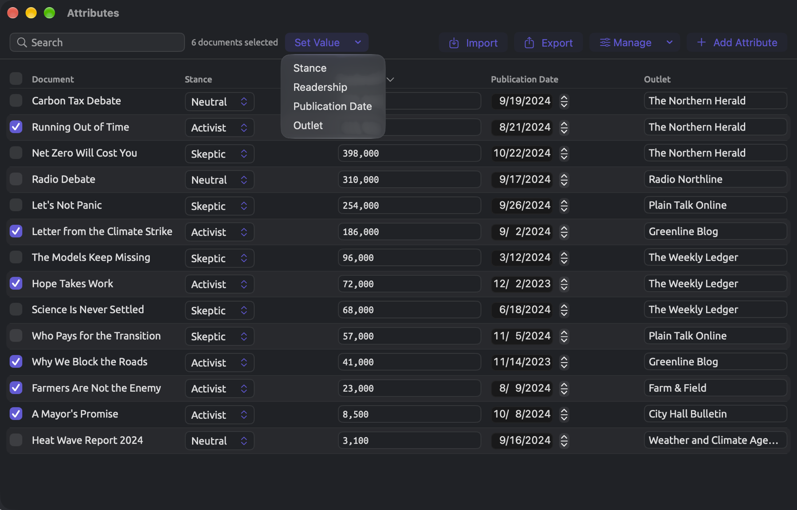
Attributes may be tested for in a smart set’s conditions. An attribute can serve as a means for grouping columns in the Code Matrix. You could split the output of a query by attribute to form a comparison between different groups of results. Tags, sets, groups, and attributes are all covered in detail in Chapter 8, Sets, Groups, Tags, and Attributes. For attributes on codes, see Codes and coding below.
Codes and coding
Coding in LemmaLoom refers to assigning passages in documents to thematic labels referred to as codes. A code may refer to any theme, idea, question, topic, etc., in your documents, while a code placed beneath another code becomes a subcode. For instance, the codes “Tipping Points” and “Deadlines” in “Climate Debate” are both subcodes of “Urgency”. Codes’ appearances in the reader are determined by the color and formatting style chosen for each code (formatting styles being Highlight, Underline, or Boxed). A code’s description, tags, and attributes may be set, as well as a scope for where it applies, which can be the entire Project, a single Document set, or a single Document. Typically, you would define your codes in the codebook (Codebook under Project in the navigation sidebar); this list shows the description and the total amount used for each code defined. For filtering or comparing a subset of codes, you can put them in code sets. “Climate Debate” has the code set “Arguments”.
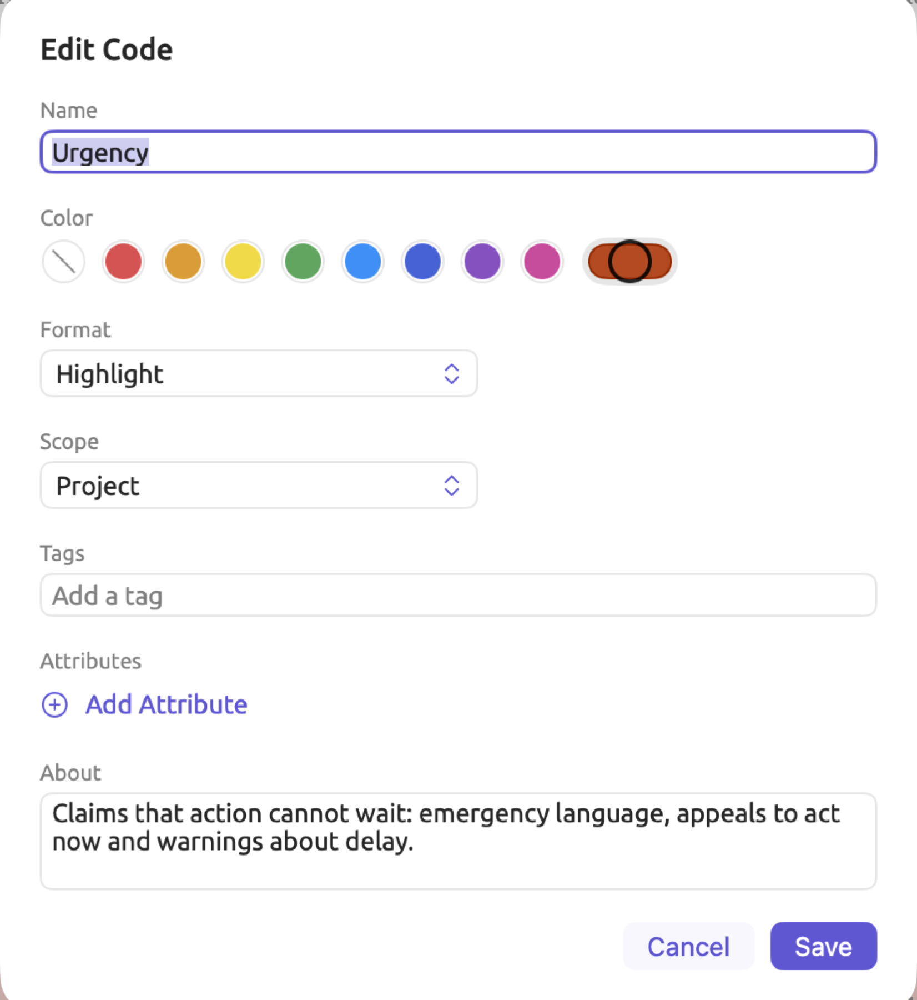
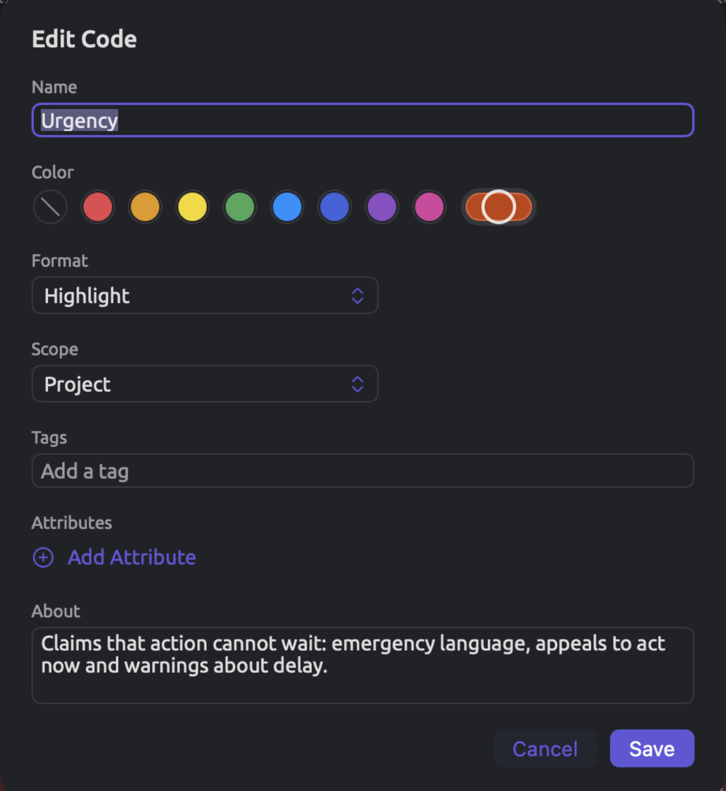
Each time you assign a code to a passage, you make a coding, with the passage named the coding’s segment, or interchangeably its coded segment. One coded segment consists solely of a single passage with one code; hence, a passage coded both “Costs” and “Responsibility” counts as two separate codings. Overlapping and nesting of codings can occur. In cases where the codes have attributes, the attribute’s values are associated individually with each coding and not the codes. Imagine you have a code representing emotions with an attribute indicating how intense the emotion is; when applying the code to various passages, you would assign an intensity level to each coding.
Memos, links, and bookmarks share many similarities with codings as all are applied similarly (select passages and click their respective button in the selection bar); however, they each serve separate functions. Applying a memo allows commenting on selected passages. Select your desired passage and click Memo. Memos could also be assigned to codes (coded memos) and carry the code’s tags; they also have their own values for the code’s attributes and can be counted by queries alongside that code’s codings. Creating links enables connecting passages between each other, in the same document or across documents; this functionality helps keep track of passages that are related to one another (contradicting passages, passages responding to each other, etc.). First, select one passage and then click Link; then, select another passage and click Finish Link. Your link will extend from the former passage to the latter one. Links may be given a relation between the two ends, in your own words, as well as a comment and tags. Bookmarks are meant solely for bookmarking passages you want to come back to later; select a passage and click Bookmark, optionally giving the bookmark a comment and a color. You can view bookmarked passages in the Bookmarks lens in the reader and in the inspector’s Text tab.
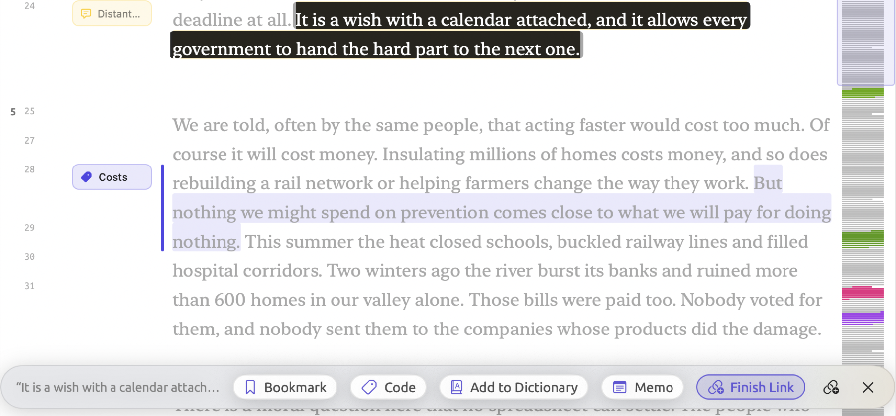
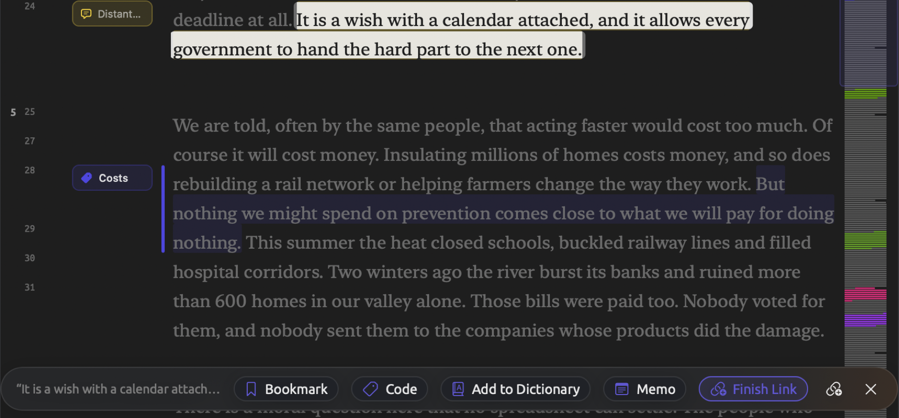
Analysis tools
When you add a document to a project, LemmaLoom indexes it by analyzing its grammar. This means that the text is broken down into sentences and tokens, consisting of individual words and punctuation marks. Then, every word is given its lemma, its part of speech, and its grammatical features. A lemma refers to the dictionary form of each word; thus, both ran and running will yield run in a lemma form. In addition to indexing individual words, LemmaLoom captures word relationships in a sentence and records the phrases they form. Large texts and lengthy recordings may take considerable amounts of time to process or transcribe, depending on the computational capacity of your Mac. During indexing, a progress ring will appear next to the document in the navigation sidebar to indicate its current progress level. The Activity window, accessible via Window ▸ Activity (⌥⌘0), displays all ongoing activities. Importing a document does not necessarily require immediate indexing; documents can be added with Index for grammar analysis toggled off and indexed later via the Index Now option in Document Properties.
A lens is responsible for styling the text or adding annotations to help highlight the places where categories appear in your document, whether word classes, codes, or something else you need. From the lens menu, the first of the controls at the right end of the title band, you select lenses. Multiple lenses can be selected simultaneously. Some lenses, like Word class, Modality, and Negation, render the grammar analysis, while the others, like Codes and Bookmarks, render your own work with the tools you have made. Codes and Bookmarks are already enabled the first time you open a document. Every dictionary, custom analyzer, and query saved as a lens is added to the lens menu as a lens of its own. If a document has not been indexed yet, the lens menu remains disabled.
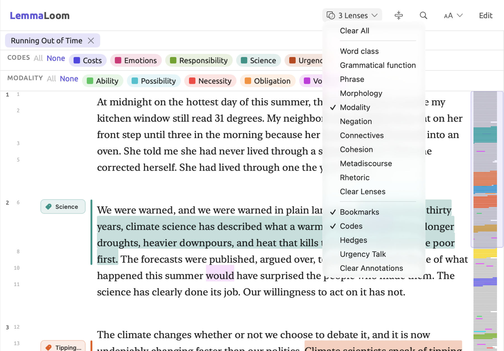
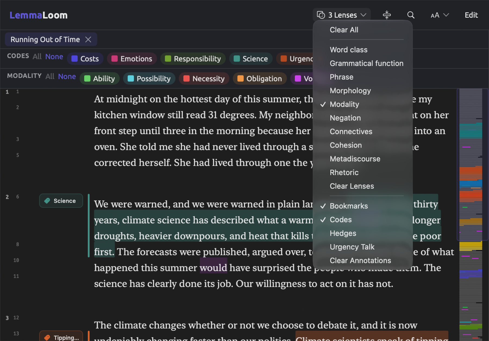
An analyzer is a module that adds analysis results to the document being indexed. LemmaLoom comes equipped with three built-in analyzers. Cohesion traces connections between each sentence and the previous context, Metadiscourse annotates words that guide the audience (like hedges and boosters), and Rhetoric identifies stylistic features like the use of the passive voice and parallelism. You can create your own analyzer with scripts written in JavaScript from Window ▸ Analyzers; a custom analyzer can be accessed in every project. Results added by an analyzer can be rendered as a lens or searched with queries; you choose which analyzers run when you import a document, although Document Properties can trigger an analyzer on an existing document or remove it.
A query searches your documents, returning a result containing the elements of interest according to specified conditions. To construct a query, you use conditions in the query builder; some conditions dictate the content of your search (e.g., words, sentences, codings, or documents), while others set out the criteria for the search and presentation format (e.g., List, Count, Compare if you want to compare groups). Depending on the extent of your search, a query may be constructed from Window ▸ Queries (across projects), the Queries section of a project or document set, or the Multimode tab of the inspector (for a single document). Saved queries can belong to documents, sets, projects, or all projects and serve as lenses, smart sets, and even custom analyzers; additionally, LemmaLoom can apply auto-codings based on queries. Not everything must be built from scratch though, as you have access to a collection of recipes consisting of prebuilt queries under Recipes wherever you build queries; examples include Concordance, Keywords, or Codings by Attribute queries. The “Climate Debate” project hosts two saved queries, “Urgency Talk”, which is stored as a lens, and “Keywords: Activists”, which belongs to the set “Activists”.
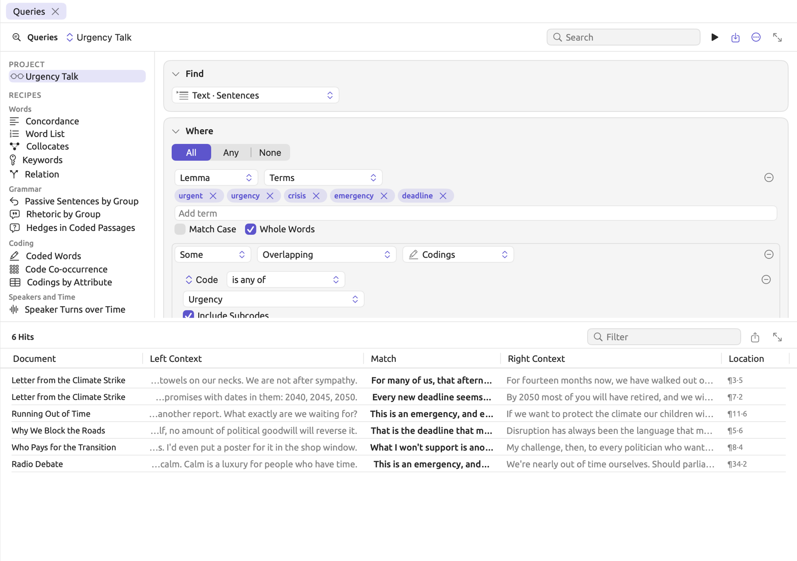
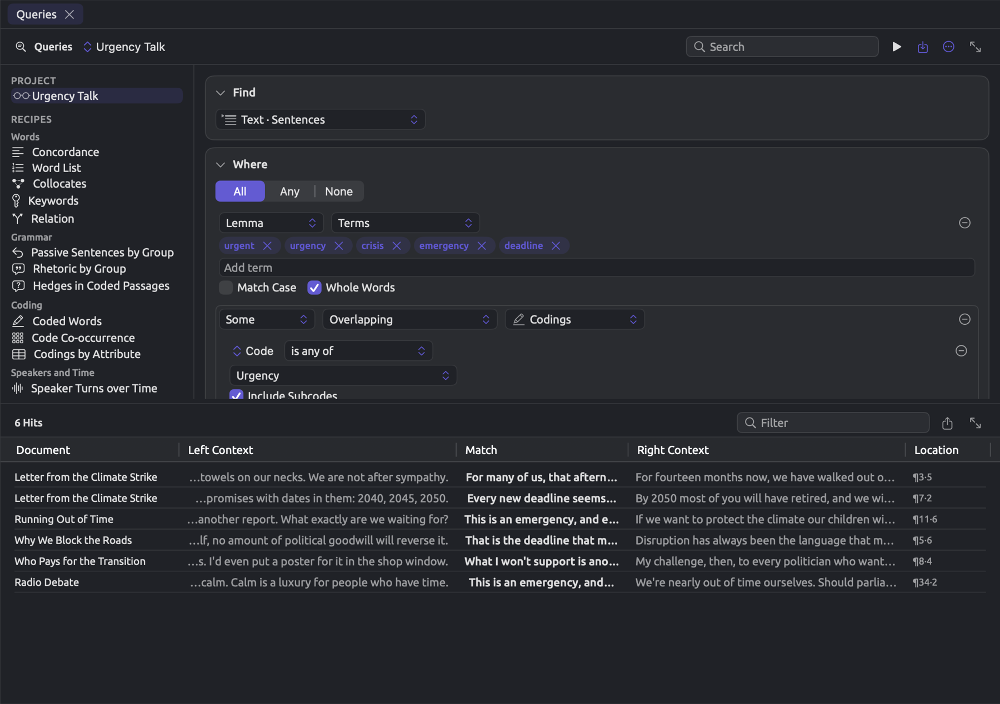
Dictionaries collect terms under named categories, allowing you to locate these words in documents and generate statistics according to their category. Any dictionary can also be rendered as a lens. Dictionaries for each project reside in its Dictionaries section, while adding terms from the selection into a dictionary is performed via Add to Dictionary located on the selection bar (where you can choose a dictionary and the category). As an example, the “Climate Debate” project possesses a dictionary titled “Hedges”. Within this dictionary there exist two categories:
| Category | Terms |
|---|---|
| Approximators | about, around, roughly, approximately, more or less, almost, nearly, just about |
| Shields | I think, perhaps, maybe, probably, it seems, I suppose, I’d say, I’m not sure |
The example project
Most examples, diagrams, and screenshots in this guide come from one project, “Climate Debate”. This fictional dataset includes op-eds, columns, and other kinds of texts regarding climate change published in the course of some public debate on the matter. LemmaLoom ships with this example project to give you the ability to reproduce each step mentioned in this guide yourself by importing “Climate Debate”. Choose File ▸ Import ▸ Example Project to import “Climate Debate” into your LemmaLoom library as the active project, with its documents already indexed.
| Item | In “Climate Debate” |
|---|---|
| Documents | 15 in all. Eleven plain-text documents, including op-eds, columns, blog posts, and a speech, with “Running Out of Time”, “Letter from the Climate Strike”, “Why We Block the Roads”, “Farmers Are Not the Enemy”, “A Mayor’s Promise”, and “Hope Takes Work” by activists, and “The Models Keep Missing”, “Net Zero Will Cost You”, “Let’s Not Panic”, “Who Pays for the Transition”, and “Science Is Never Settled” by skeptics. “Heat Wave Report 2024”, a PDF; “Carbon Tax Debate”, a web page; “Radio Debate”, an audio recording with its transcript; and “Running Out of Time (German)”, a German translation of “Running Out of Time” |
| Groups | “Print”, “Online” |
| Sets | “Activists” (the six texts by activists), “Skeptics” (the five texts by skeptics) |
| Smart set | “Wide Reach”, whose condition is “Readership” is at least 100,000 |
| Tags | “op-ed”, “viral” |
| Attributes | “Stance”, “Readership”, “Publication Date”, “Outlet” |
| Codes | “Urgency” (with the subcodes “Tipping Points” and “Deadlines”), “Science” (with the subcode “Uncertainty”), “Costs”, “Responsibility”, and “Emotions” (with the subcodes “Fear” and “Hope”); “Radio Debate” also has “Speakers” (with the subcodes “Host”, “Activist”, and “Skeptic”) |
| Code set | “Arguments” |
| Dictionary | “Hedges”, with the categories “Approximators” and “Shields” |
| Saved queries | “Urgency Talk” (saved as a lens), “Keywords: Activists” (in the set “Activists”) |
How this guide is organized
The beginning of chapters usually discusses the concepts on which the chapter depends. From there they move on to procedures and end with the details. If you are a beginner with LemmaLoom, the Quick Start is the place to get started, walking you through an initial project in one sitting. Chapter 2, Getting Started follows next. It introduces the main window of LemmaLoom and how LemmaLoom structures the workspace, discussing topics like projects, document imports, coding, etc. From here onwards, you have the flexibility to explore any chapters based on your interests. For example, if your work involves a lot of coding, you should check out Chapter 7, Coding and Chapter 8, Sets, Groups, Tags, and Attributes. For grammar and word counts, go on to Chapter 6, Lenses, Chapter 11, The Grammar Inspector, and the query chapters.
| Chapter | What it covers |
|---|---|
| Getting Started | First launch, the main window, projects, importing, coding, and a first analysis |
| Projects and Documents | Projects, documents, the navigation sidebar, document properties, and working across projects |
| Importing Material | Text files, PDFs, web pages, recordings, and attribute values |
| Reading and Editing | The reader, finding and selecting text, and editing a document |
| Lenses | Every lens and what it annotates |
| Coding | Codes, codings, memos, links, bookmarks, and automatic coding |
| Sets, Groups, Tags, and Attributes | Dividing a project for analysis |
| Translations and Split View | Translating documents and reading two side by side |
| The Text Inspector | Counts, readability, and vocabulary measures for one document |
| The Grammar Inspector | Sentence diagrams, collocates, and discourse in one document |
| Word Sketch | A word’s grammatical partners and how they are scored |
| Analyzing Codes | Tables, matrices, and charts of codings, and co-occurrence measures |
| Sketch Space | One word’s partners compared across codes or attribute values |
| Building a Query | The query builder, its conditions, and where queries are kept |
| Query Results and Statistics | Each way of showing results and the statistics it reports |
| Query Patterns and Discovery | Grammatical patterns, and finding passages like ones you coded |
| Using Query Results | Turning a query into a lens, analyzer, or smart set, and acting on hits |
| Dictionaries | Categories of terms, how they match, and the dictionary lens |
| Custom Analyzers | Writing analyzers of your own in JavaScript |
| Analysis and Indexing | What indexing produces for each language and how to control it |
| Exchanging and Exporting | REFI-QDA exchange, LemmaLoom archives, and other exports |
| Undo and Redo | What can be undone |
| Settings and Appearance | Themes, reader settings, lens styles, and the interface language |
| Keyboard Shortcuts | Every keyboard shortcut |
| Help and Support | The Glossary, feedback, and how to report a problem |
| Statistics at a Glance | Every statistic in one table |
Conventions
Whenever you encounter a term in boldface type, whether it is a menu, label, etc., such as Code, Word Sketch, or Auto Code…, it is safe to assume that it will appear precisely as written within LemmaLoom. If this guide is the German or Chinese version, the term would refer to the German or Chinese version of the interface respectively.
Menu commands follow the path notation where the menu name precedes an action separated by ▸. Choosing File ▸ Import ▸ Web Pages entails opening File, navigating to Import, and then selecting Web Pages. LemmaLoom’s application menu will always be under LemmaLoom, while settings will be under LemmaLoom ▸ Settings…. Whenever you click on a menu item whose name ends in an ellipsis (…), expect a dialog or a window to open, allowing you to configure your preferences prior to any action taking place.
Shortcut menus exist for many LemmaLoom items. Accessing one is achieved using either the secondary click or Control-click, depending on your device input method. A document’s shortcut menu in the navigation sidebar will allow you to Translate, modify its Properties, or Delete Document, for example.
Here are the symbols macOS uses for the modifier keys in keyboard shortcuts:
| Symbol | Key |
|---|---|
| ⌘ | Command |
| ⇧ | Shift |
| ⌥ | Option |
| ⌃ | Control |
Pressing ⇧⌘C means holding down both the Shift and Command keys before pressing C. Each command with an associated shortcut is followed by its shortcut in parentheses, as in Document ▸ Code (⇧⌘C). See Chapter 25, Keyboard Shortcuts for a list of keyboard shortcuts.
Italics indicate where a term is defined, along with quotations made directly from any documents being analyzed, for instance, climate and perhaps. Text typed literally will appear in monospace font, while file names and extensions like .qdpx also appear similarly; example names in the “Climate Debate” project, such as the “Activists” set and the “Deadlines” code, will appear in quotation marks.
If controls are grayed-out or disabled, either they are irrelevant to your current context or they are not available for it at the moment. To discover why a particular button or option in a window or dialog is disabled, hover the mouse pointer over it.
System requirements
LemmaLoom requires a minimum macOS version of 26.6.
The application includes all required components for grammar analyses and for transcription with the Whisper models. The default Apple Speech model uses speech components from macOS, which LemmaLoom downloads if they are not yet installed on your Mac. Translation depends on the installed translation languages within macOS. When you initially translate between two languages, macOS may prompt you to install them.
Supported languages
Interface language
The interface language in LemmaLoom may be English, German, or Mainland Simplified Chinese. This applies to menus, windows, and messages throughout the app. LemmaLoom defaults to whatever among the three languages ranks highest based on your preference setting in System Settings ▸ General ▸ Language & Region. Otherwise, the app resorts to English should none of the three languages be listed in your Language & Region settings.
LemmaLoom can also have an interface language of its own, regardless of your system selection:
- Choose LemmaLoom ▸ Settings… (⌘,).
- Click General.
- Under Language, choose English, Deutsch, or 简体中文 in the Interface language menu. System Default goes back to following macOS.
- Click Quit LemmaLoom, then open LemmaLoom again.


Document languages
There is a Language menu in the Import Document dialog where Automatic will let LemmaLoom figure out the language for you automatically. Alternatively, you may set English, German, or Chinese manually. You can change the language at any time in the document’s properties; the document will be re-indexed for that language when you do so.
For all three supported languages, the full grammar analysis, including the three built-in analyzers, will take place. Analysis tools earlier in this chapter describes the grammar analysis. However, several lenses depend on one language or another:
| Lens | English | German | Chinese |
|---|---|---|---|
| Word class, Grammatical function, Phrase | yes | yes | yes |
| Modality, Negation, Connectives | yes | yes | yes |
| Cohesion, Metadiscourse, Rhetoric | yes | yes | yes |
| Morphology | yes | yes | no |
| Sentence fields | no | yes | no |
| Constructions, Particles | no | no | yes |
The Cohesion, Metadiscourse, and Rhetoric lenses all rely on their respective analyzers. Only once the analyzer has run on the document will its lens appear in the lens menu. If you disable an analyzer at import, or later remove it from Document Properties, the associated lens will disappear from the lens menu.
The Morphology lens provides grammatical annotations such as tense, number, degree (big, bigger, biggest), and verb form. In German, it provides additional annotation for case, mood, and gender. Since Chinese does not inflect any words based on these grammatical features, the Morphology lens is available exclusively to documents written in English and German. Sentence fields annotates the two parts of the verb (Linke Klammer, Rechte Klammer) in German. It also annotates the fields before, between, and after them (Vorfeld, Mittelfeld, Nachfeld), which taken together are known as topological fields. Constructions annotates the common sentence constructions in Chinese (e.g., constructions containing 把 and 被), while Particles annotates aspect particles, structural particles, and classifiers in Chinese.
You may import documents in other languages as text documents. They can be read, searched, coded, noted upon in memos, linked to, and bookmarked. The language code appears alongside each document in the navigation sidebar; examples include EN, DE, and ZH. Other languages receive a question mark beside the code. Hovering the mouse pointer over that will reveal Language not supported for indexing. These documents cannot access any functionality involving an indexed document, including the lens menu, Grammar tab, word sketch, or queries about words and sentences. They may be queried, nonetheless, about codings, memos, or documents generally.
Recordings are an exception. LemmaLoom transcribes speech into text only as English, German, or Chinese, depending on which matches most closely with the initial 30 seconds of the recording. The transcribed Chinese speech uses simplified characters throughout. How transcription works in Chapter 4, Importing Material gives the details.
In order to analyze grammar in a document in another language, translate it. A translated document in English, German, or Chinese gets the status of any other indexable document. When making a query or word sketch for your document’s set, simply choose the translations as the Corpus.